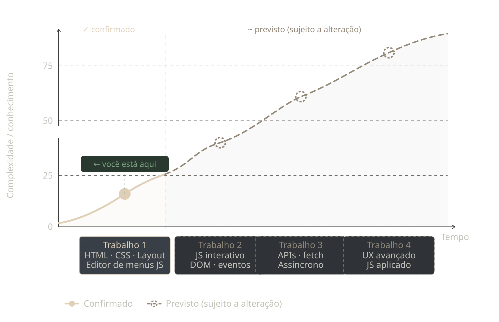

Sobre este portfólio
Este portfólio semestral reúne os trabalhos desenvolvidos na disciplina de Interação Web. Ele foi criado para registrar meu processo de aprendizagem, desde a estrutura inicial das páginas até a construção de interfaces interativas com HTML, CSS e JavaScript.
Ao longo do semestre, novos projetos serão adicionados a este site. Cada trabalho apresentará uma proposta diferente, permitindo praticar organização de conteúdo, responsividade, acessibilidade, design visual e interação com o usuário.
Objetivo principal
O principal objetivo deste site é apresentar, de forma organizada e visualmente coerente, a evolução dos trabalhos realizados durante a disciplina. Além de reunir os resultados finais, o portfólio também representa meu desenvolvimento na criação de páginas web mais claras, funcionais e agradáveis de usar.
O primeiro trabalho será um editor de menus para páginas HTML. Nele, será possível alterar itens, textos, cores, bordas, espaçamentos e a disposição de um menu, visualizando as mudanças em tempo real.
Trabalhos do semestre
Próximos trabalhos
Conforme novas atividades forem desenvolvidas, elas serão incluídas no menu deste portfólio. Dessa forma, o site continuará crescendo durante o semestre e servirá como um registro dos conhecimentos adquiridos em cada etapa.
O que esperar deste portfólio?
Este portfólio acompanhará minha evolução durante a disciplina de Interação Web. A cada trabalho, novos conceitos serão aplicados na construção de interfaces mais organizadas, responsivas e interativas.

Referências
- INSTITUTO FEDERAL DO RIO GRANDE DO SUL. Projeto Pedagógico do Curso Superior de Tecnologia em Análise e Desenvolvimento de Sistemas. Campus Rio Grande, 2022. Acessar documento